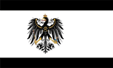
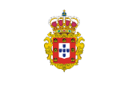
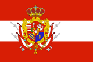
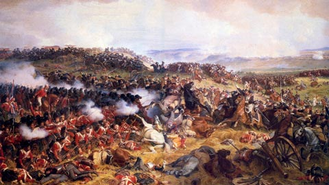
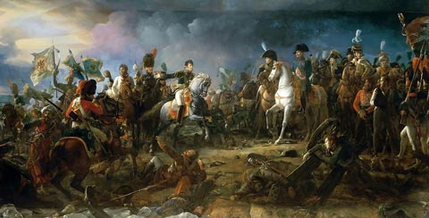

Battle of Waterloo
September 18 1815Third Coalition
- 
- 
- 
- Commanders:
- The Duke of Wellington
- Gebhard Leberecht von Blücher
Armies
Three armies were involved in the battle: Napoleon's Armée du Nord, a multinational army under Wellington, and a Prussian army under Blücher.
The French army of around 69,000 consisted of 48,000 infantry, 14,000 cavalry, and 7,000 artillery with 250 guns. Napoleon had used conscription to fill the ranks of the French army throughout his rule, but he did not conscript men for the 1815 campaign. His troops were mainly veterans with considerable experience and a fierce devotion to their Emperor.[24] The cavalry in particular was both numerous and formidable, and included fourteen regiments of armoured heavy cavalry, and seven of highly versatile lancers who were armed with lances, sabres and firearms.
Wellington later said that he had 'an infamous army, very weak and ill-equipped, and a very inexperienced Staff'. His troops consisted of 67,000 men: 50,000 infantry, 11,000 cavalry, and 6,000 artillery with 150 guns. Of these, 25,000 were British, with another 6,000 from the King's German Legion (KGL). All of the British Army troops were regular soldiers, but only 7,000 of them were Peninsular War veterans.[26] In addition, there were 17,000 Dutch and Belgian troops, 11,000 from Hanover, 6,000 from Brunswick, and 3,000 from Nassau.
- 
- 